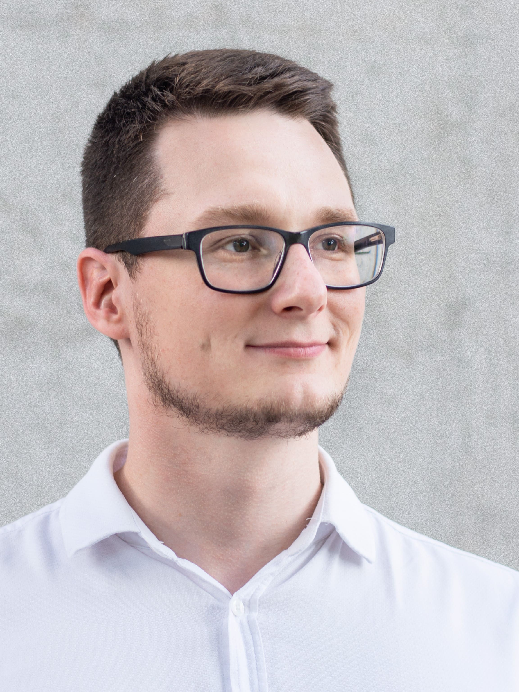

|  |
I’m a lawyer & LegalTech enthusiast with key expertise in providing complex legal solutions to medium and small size businesses. From 2010 till 2018 I served as a legal counsel in multiple law firms and international corporations including Jensen Group, Cargotec and Gazprom International. In 2018 I started my own law firm which focuses on intellectual property management, contract & investment law. Also, I’m a professor at Polytechnic University & a founder of Legal School project, aimed at raising legal literacy among entrepreneurs. In 2017 the project was recognized in “Corporate lawyer” rankings as 2nd best legal department in Russia among nonprofits. I’m fluent in English as I have participated in multiple international exchange programs (Future Leaders Exchange, Russian Business Leaders). Please feel free to contact me: law.makarov@gmail.com |
Work experience
|
Private legal practice Managing partner (owner)February 2018 – Present Russia, Saint-Petersburg |
I’m providing full legal support to businesses and individuals, focusing on digital law & investment. Legal practice also includes legal support in the fields of software development, financial services, pharmaceutical industry, construction, international education and others. I’m interested in LegalTech projects and currently developing few projects in this field. |
|
Peter the Great St. Petersburg Polytechnic University ProfessorFebruary 2019 – Present Russia, Saint-Petersburg |
I’m a professor at Peter the Great St. Petersburg Polytechnic University –ranked as 2nd best university in St. Petersburg. I teach Intellectual Property Management course to international master students. |
|
Gazprom EP International B.V. Lead legal counselDecember 2016 – February 2018 Russia, Saint-Petersburg www.gazprom-international.com |
At Gazprom I was providing complex legal support of international O&G projects and examining many major interrelated oil & gas investment and financial agreements with state and international oil & gas companies. I implemented multiple M&A projects in Latin America (Bolivia, Brazil and Venezuela). Also I optimized the contractual work of intra-group financing, which allowed to significantly increase the transparency of financing, as well as reduce tax risks. I have drafted many legal opinions in regard of compliance issues in the European Union and Russia. |
|
Vela Wood Law offices Fellow lawyerOctober 2016 – November 2016 USA, TX, Austin www.velawoodlaw.com |
Vela Wood is a boutique corporate law firm that focuses its practice on startups, corporate matters, partnership disputes and venture financing. During my fellowship I have established partnerships with few other legal firms in the U.S. as well as provided legal support to startups including: indicating preferable forms of legal entities for businesses, analyzing available fundraising and equity options for startups and preparing reports on tax consequences of equity transfers. |
|
Cargotec Rus Senior legal counselJanuary 2015 – September 2016 Russia, Saint-Petersburg www.cargotec.com |
Cargotec Oyj is a world leader in providing cargo handling solutions. I provided full legal assistance of company operations in Russia, developed a legal structure for bringing one of the business divisions to Russian market. I have developed a system of local normative legal acts and provided legal consultations to foreign partners regarding the implementation of major projects in Russia and CIS. Also major court and administrative hearings with governmental bodies were won (more than 70.000.000 rubles in evaluation). |
|
Jensen Group LawyerMarch 2013 – December 2014 Russia, Saint-Petersburg www.jensen.ru |
Legal support of the group of companies. Jensen Group is one of the largest investment companies in the real estate market of St. Petersburg, which manages assets worth more than $500,000,000. I have conducted legal analyses on multiple major investment projects and organized and automated contractual work. My duties included drafting bilingual contracts, government relations and negotiations, arbitration and preparation of legal opinions on various issues. |
|
Gutsu, Zhukovsky & Partners Assistant AttorneyFebruary 2010 – February 2012 Russia, Saint-Petersburg www.gzh-p.ru |
My duties at law offices included representation of law offices and clients in the state bodies, arbitration courts, courts of general jurisdiction. I was drafting contracts and basic legal documents. |